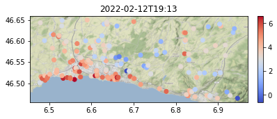

Usage
Pre-requisites
In order to access the data from Netatmo citizen weather stations (CWS), you need a Netatmo username, password, client ID and client secret. You can obtain the former credentials following the steps below:
- Create an Netatmo account at auth.netatmo.com/access/signup. The entered email address and password will respectively be the username and password used in netatmo-geopy.
- From your account, navigate to dev.netatmo.com/apps/ and click "Create" to create an app. This only serves to obtain a client ID and secret key, so you do not need to enter any specific information in "app name" and "description".
- Once the app is created, save the generated "client ID" and "client secret" which will appear in the form below (entitled "App Technical Parameters"), which will be used in netatmo-geopy.
Features
First import netatmo-geopy as in:
import netatmo_geopy as nat
You can then use netatmo-geopy to get the CWS temperature measurements for a region of interest as in:
# latitude/longitude bounds of the region of interest
lon_sw, lat_sw, lon_ne, lat_ne = 6.5175, 46.5012, 6.7870, 46.6058
# init the CWS recorder
cws_recorder = nat.CWSRecorder(
lon_sw,
lat_sw,
lon_ne,
lat_ne,
username="<your-netatmo-username>",
password="<your-netatmo-password>",
client_id="<your-netatmo-client-id>",
client_secret="<your-netatmo-client-secret>",
)
Alternatively, instead of passing the Netatmo credentials to the initalization of CWSRecorder, you can also set them as the NETATMO_USERNAME, NETATMO_PASSWORD, NETATMO_CLIENT_ID, and NETATMO_CLIENT_SECRET environment variables, then netatmo-geopy will use them automatically when required. In order to use more concise code snippets, the remainder of this page assumes that the Netatmo credientials are provided using the environment variables.
Then, the current snapshot of CWS measurements in the region can be obtained as in:
gdf = cws_recorder.get_snapshot_gdf()
gdf.head()
| 2022-02-12T19:13 | geometry | |
|---|---|---|
| station_id | ||
| 02:00:00:01:5e:e0 | 6.6 | POINT (6.82799 46.47089) |
| 02:00:00:22:c0:c0 | 4.9 | POINT (6.82904 46.47005) |
| 02:00:00:2f:0b:16 | 3.5 | POINT (6.82516 46.47294) |
| 02:00:00:59:00:2a | 3.8 | POINT (6.84547 46.46779) |
| 02:00:00:52:ed:5a | 3.8 | POINT (6.87359 46.47067) |
You can also use the plot_snapshot to plot the data on a map:
nat.plot_snapshot(gdf)

Schedule a periodic job to record CWS data for a region
It is possible to use netatmo-geopy to set up a periodic job to record CWS measurements. To that end, you need to provide the time_unit argument to the initialization of CWSRecorder, as in:
snapshot_data_dir = "data/lausanne"
cws_recorder = nat.CWSRecorder(
lon_sw, lat_sw, lon_ne, lat_ne, dst_dir=snapshot_data_dir, time_unit="hour"
)
which will dump an hourly snapshot of CWS measurements to the directory specified with the dst_dir argument. The time_unit argument can be combined with the interval, at and until arguments, e.g., the following task will record the CWS measurements of the region at the 30th minute of every three hours for the next 24 hours:
from datetime import datetime, timedelta
cws_recorder = nat.CWSRecorder(
lon_sw,
lat_sw,
lon_ne,
lat_ne,
dst_dir=snapshot_data_dir,
time_unit="hours",
interval=3
at=":30",
until=datetime.now() + timedelta(hours=24),
)
See the documentation of schedule for more examples on scheduling periodic jobs.
Assemble CWS snapshots into a single time-series geo-data frame
After a time series of snapshots have been dumped to a directory, the CWSDataset class can be used to assemble the data into a single geo-data frame, i.e., the temperature_gdf attribute:
cws_dataset = nat.CWSDataset(snapshot_data_dir=snapshot_data_dir)
cws_dataset.temperature_gdf.head()
| 2022-02-06 09:30:00 | 2022-02-06 12:30:00 | 2022-02-06 15:30:00 | 2022-02-06 18:30:00 | 2022-02-06 21:30:00 | 2022-02-07 00:30:00 | 2022-02-07 03:30:00 | 2022-02-07 06:30:00 | geometry | |
|---|---|---|---|---|---|---|---|---|---|
| station_id | |||||||||
| 02:00:00:01:5e:e0 | 1.542567 | 4.815597 | 0.550991 | 0.948516 | 2.600634 | 0.312831 | 3.088689 | 3.442664 | POINT (6.82799 46.47089) |
| 02:00:00:22:c0:c0 | 4.093453 | 2.291656 | 0.258319 | 3.346670 | 4.571841 | 2.299931 | 0.447544 | 4.558038 | POINT (6.82904 46.47005) |
| 02:00:00:2f:0b:16 | 1.588176 | 4.521104 | 3.060942 | 1.931824 | 3.027879 | 2.567090 | 1.326534 | 0.043705 | POINT (6.82516 46.47294) |
| 02:00:00:59:00:2a | 0.452659 | 2.443335 | 2.270666 | 0.867035 | 3.965786 | 2.200247 | 3.443507 | 1.314949 | POINT (6.84547 46.46779) |
| 02:00:00:52:ed:5a | 1.022992 | 1.795367 | 1.099024 | 2.775641 | 1.663362 | 1.033040 | 1.875658 | 1.031009 | POINT (6.87359 46.47067) |